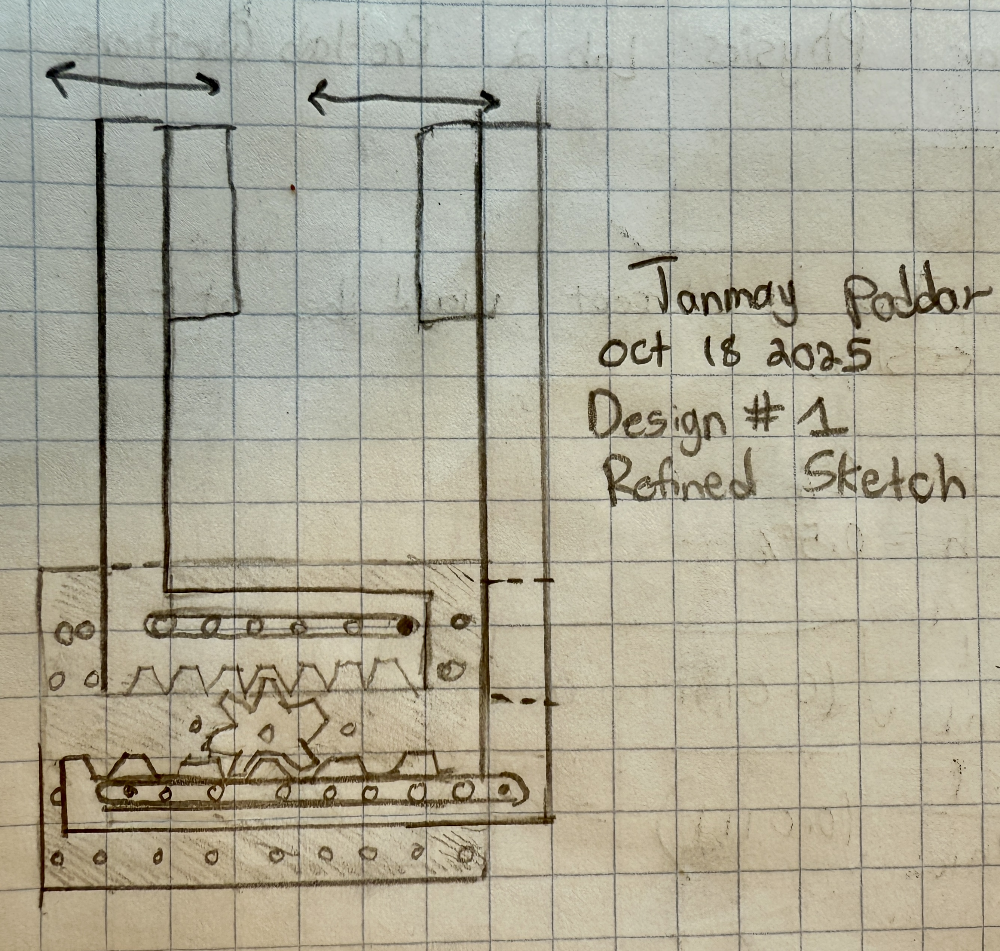
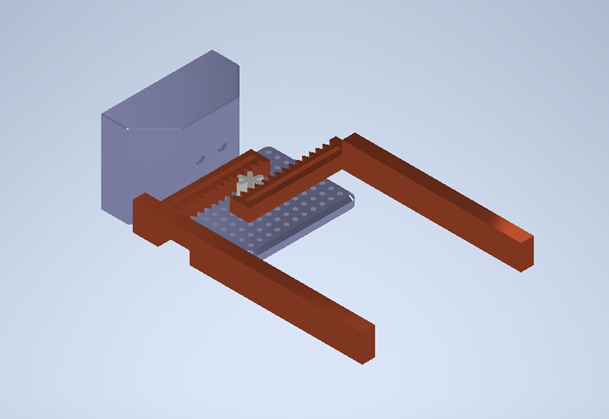
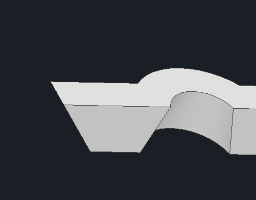
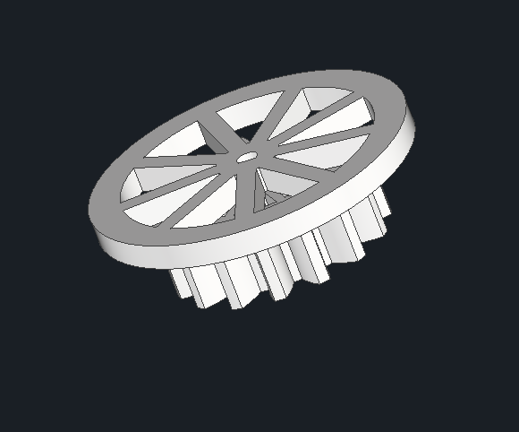
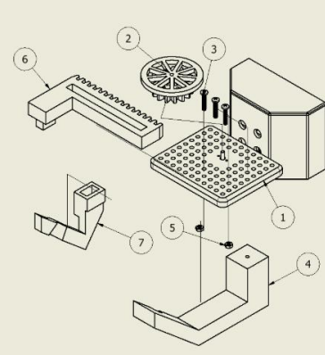
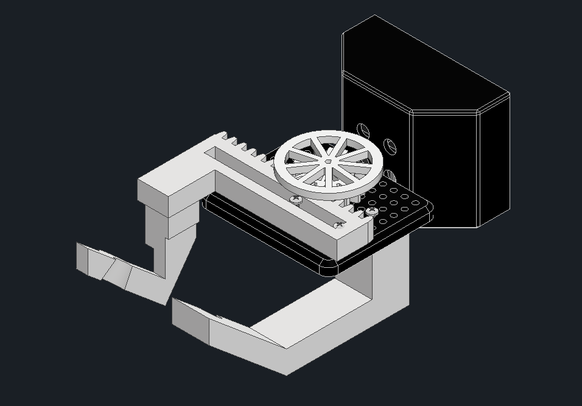

Project 01 · Engineering Design
The purpose of this project was to design a universal end-effector that can grab, lift, and move objects of varying shape and dimensions to a different location. The end effector was mounted to a Q-Arm and supported by a complete Python codebase for automated item retrieval.
The application behind the project is to create a universal solution for use in an e-commerce warehouse — retrieving items from shelving and moving them onto a conveyor belt for shipping.
The design process began with each member creating a concept sketch and a CAD model. My design using 2 arms linked by a rack and pinion was selected. A core principle I implemented from the beginning was to reduce the number of moving parts.
As a team we chose my design and iterated on it. The 2 major modifications were fixing one arm permanently and having the arms hang downward at an angle — approximately 45 degrees, measured using trigonometry.


With the initial prototype, the claw's torque would cause it to pivot against the mounting plate edge and slip off the gear. We redesigned the gear with a cap on top to maintain contact between the rack and the motor gear.


This modification highlighted the importance of restricting the degrees of freedom for parts.
We created 4 prototypes total. The first two tested rack and pinion principles. The third was functional but too heavy for the motor. The fourth was an optimized version with material removed where possible — it worked successfully.


A practice I learned was to overbuild parts and optimize after you get the product to function.
The program began with flow charts for all individual tasks and the main menu. The code allowed users to create and authenticate credentials (securely stored using bcrypt hashing), scan barcodes to determine order items, send movement commands to the Q-Arm, and return an order summary.
I personally created the flow chart for the authenticate function, which verifies user credentials against a file of encrypted hashes using the bcrypt module.
As project manager, I oversaw the progress and completion of tasks, ensured participation from all group members, and integrated the different elements together.
Throughout this project many setbacks arose from overcomplicating elements of the task at hand. For instance, my initial sketch with 2 moving claws. When iterating on the design one of my team members pointed out that we only needed one claw and that allowed us to use the full torque of the motor to press the object against the fixed claw. The initial testing with a single claw, revealed the lack of torque in the motor. As such the single claw turned out to be a good design decision. Redesigning & printing the part to reduce the material alleviated this issue.
A personal shortcoming was not ensuring enough testing time. Issues with the Q-Arm left us only 45 minutes of full integration testing, resulting in a failure during the demonstration that we fixed in under 60 seconds — but a mark deduction nonetheless.
This reinforced the idea that the simplest solution is often the best solution.